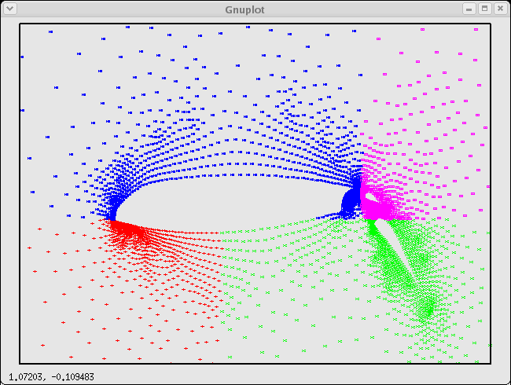
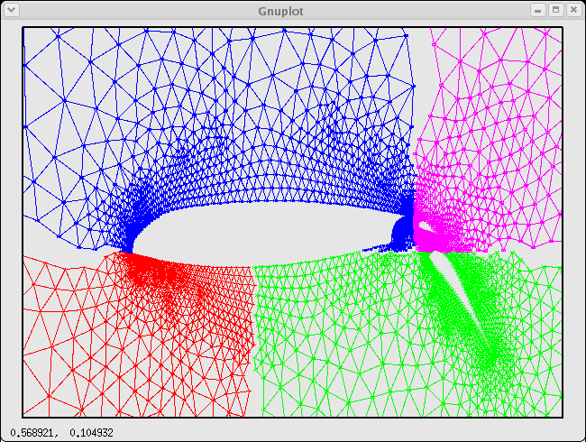
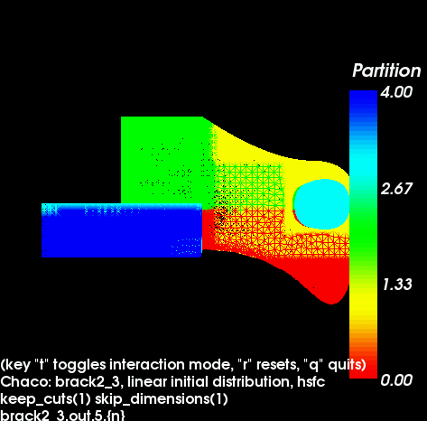

vtk_view is a parallel MPI program. It does not need to be run with the same number of processes with which you ran zdrive. You can choose the number of processes based on the size of the input mesh you will be visualizing, and the computational load of rendering it to an image at interactive rates.
If you run vtk_view in the directory in which you ran the test driver, the following will happen:
The example below shows how vtk_view displays the mesh in the test directory ch_brack2_3 after it has been partitioned with HSFC across 5 processes.

If no test driver output files are found, vtk_view will display the mesh without part IDs.
There are a few additional options that can be added to the test driver input file, that are specifically for vtk_view.
| zdrive count = <number> | the number of file_name.out.p.n files, also the value of p |
| image height = <number> | number of pixels in height of image (default is 300) |
| image width = <number> | number of pixels in width of image (300) |
| omit caption = <1 or 0> | do not print default caption in window if "1" (0) |
| omit scalar bar = <1 or 0> | do not print scalar bar in window if "1" (0) |
| add caption = <text of caption> | display indicated text in the window (no caption) |
The zdrive count option may be required if you have more than one set of test driver output files in the directory. Otherwise, vtk_view will look for files of the form file_name.out.p.n for any value p. Note that since the window may be resized with the mouse, you may not need image height and image width unless you must have a very specific window size. Also note that if you ran the Fortran test driver zfdrive, you will need to rename the output files from file_name.fout.p.n to file_name.out.p.n.
Note that while vtk_view is built with OpenGL and VTK, vtk_write must be built with Mesa GL and a version of the VTK libraries that you have compiled with special Mesa flags and with the Mesa header files. This is because OpenGL implementations are not in general capable of off-screen rendering, and Mesa GL is. The Config.generic file in Utilities/Config describes in detail how to build Mesa and then VTK for off-screen rendering.
vtk_write goes through the same steps that vtk_view does, except at the end it writes one or more image files instead of opening a window on your display. The images begin with a camera focused on the mesh, pointing in the direction of the negative Z-axis. The positive Y-axis is the "up" direction, and we use a right-handed coordinate system. (So the X-axis is pointing to the right.) The camera can revolve around the mesh in 1 degree increments.
The zdrive count, image width, and image height options listed above also apply to vtk_write. In addition, you can use these options to govern the output images.
| output format = <format name> | choices are tiff, png, jpeg, ps and bmp (default is tiff) |
| output name = <file name> | base name of image file or files (outfile) |
| output frame start = <number> | first frame, between 0 and 360 (0) |
| output frame stop = <number> | last frame, between 0 and 360 (0) |
| output frame stride = <number> | the difference in degrees from one frame to the next (1) |
| output view up = <x y z> | the direction of "up" as camera points at mesh (0 1 0) |
You can then hard-code vtk_view to read your file, or you can modify read_cmd_file in driver/dr_input.c to accept a specification of your file type in addition to Chaco and Nemesis. If you do the latter you can create a zdrive-style input file in which to specify your file name and other visualization parameters.
Finally, you need to create text files listing each global ID you supplied to Zoltan, followed by the part ID assigned by Zoltan, with only one global ID/part ID pair per line. Name this file or files using the conventions used by the test drivers.